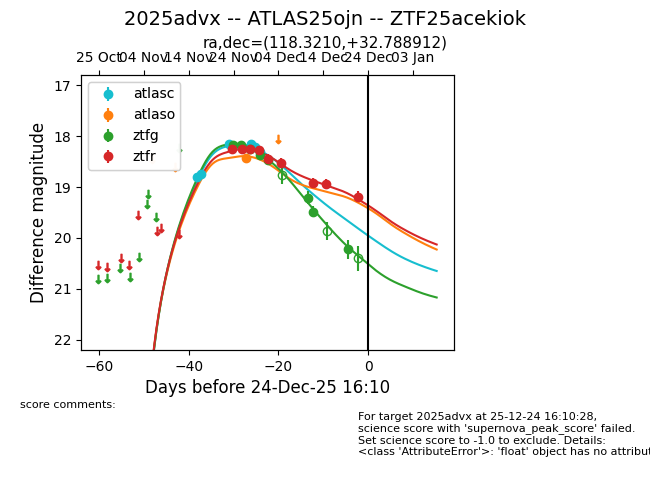
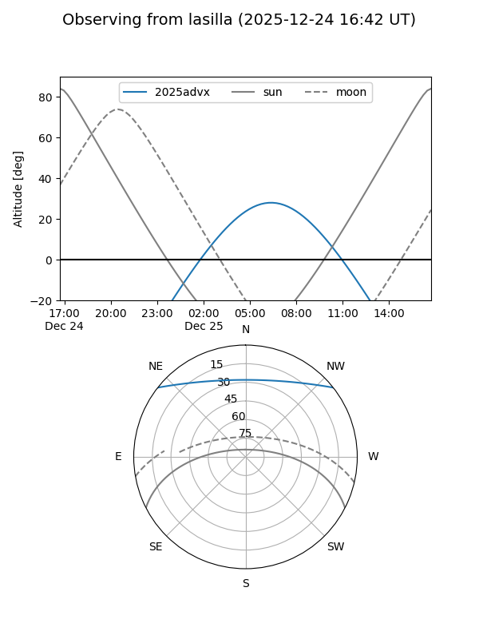
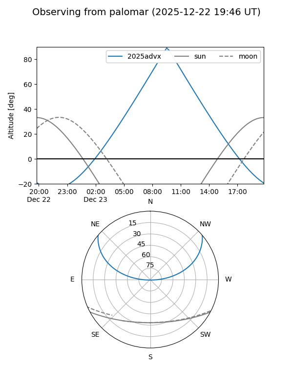
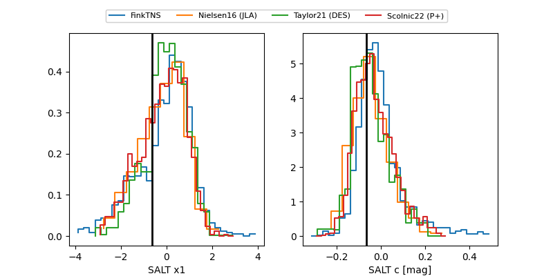

2025advx
Target 2025advx at 2025-12-22 18:16
Aliases and brokers:
FINK: fink-portal.org/ZTF25acekiok
Lasair: lasair-ztf.lsst.ac.uk/objects/ZTF25acekiok
ALeRCE: alerce.online/object/ZTF25acekiok
TNS: wis-tns.org/object/2025advx
YSE: ziggy.ucolick.org/yse/transient_detail/2025advx
alt names
ZTF25acekiok (ztf,fink_ztf)
2025advx (tns,yse)
ATLAS25ojn (atlas)
Coordinates:
equatorial (ra, dec) = 118.3210,+32.78891
equatorial (HMS+DMS) = 07:53:17.03,+32:47:20.08
galactic (l, b) = (187.8187,+26.51268)
Flags:
Photometry:
last atlasc=18.31, atlaso=18.43, ztfg=20.22, ztfr=19.19
7 atlasc, 1 atlaso, 8 ztfg, 9 ztfr detections
Lightcurve

Visibility


Additional plots
